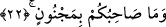

Bazı âlimlere göre bu kelime, kendisinden daha sonra gelen “emin” kelimesinin mekan
zarfıdır. Bu takdirde âyetin mânâsı; o Allah katında vahyinin güvenilir kişisi,
peygamberlerine giden mesajları hususunda güvene ermiş birisidir, demek olur. Böylece
kelime, Allah katına işâret eden bir kelime olmuş olur.
“Semme” kelimesi “sümme” şeklinde de okunmuştur. Bu durumda kelime,
Cebrâil’deki eminlik vasfını ta’zim etmiş ve onun bu vasfının, önce zikredilen diğer
vasıflarından üstün olduğuna işâret etmiş olur. Dolayısıyla “sümme” kelimesindeki
“sonralık”, rütbe itibariyle bir sonralık olmuş olur. Bu durumda Cebrâil’in sıfatları
üstün olandan en üstün olana doğru sıralanmış olur ki, bu vasıfların içinde en üstünü de,
onun vahiy emini olması olmuş olur.
Kâşifî demiştir ki; âyette geçen “kerîm rasûl” Hz. Muhammed (s.a.)’dir. Zira o
Allah’ın yakını, ibâdet ve taat yönüyle kuvvet sâhibidir. Allah katında kıymet ve itibarı
olan, dâvetine icabet edilendir.
Bu âyet-i kerimede ruhun, rûhi feyzi her bir kimseye fıtrî istidadına göre verme
noktasında emin olduğuna işâret vardır.
22. Arkadaşınız (Muhammed) de mecnun değildir.
Ey Mekkeliler! Sizin söylediğiniz gibi “arkadaşınız asla deli değildir.” Burada
arkadaş kelimesiyle işâret olunan kişi Peygamberimiz (s.a.)’dir. Bu son ifâde, yukarda
geçen kasemin cevabı üzerine atfedilmektedir. Bu nedenle Fethu’r-Rahman’da “bu son
cümle de kasemin cevabıdır” denmektedir.
Âyette “arkadaşınız” tâbirinin kullanılması, tecrübe ile Hz. Peygamber’in her hâline
vâkıf olduklarına, kendisi için uydurdukları şeylerden onun tamamen uzak olduğunu
bildiklerine işâret etmek için getirilmiştir. Çünkü Peygamberimiz (a.s.), uzun bir süre
onların arasında yaşamış, Mekke’liler onun aklını denemişler, kendisini aralarında en
akıllı kişi olarak bulmuşlar ve ona “es-Sadık, el-Emin” lakabını vermişlerdir.
Bazıları bu âyeti ileri sürerek Cebrâil’in Peygamberimiz (s.a.)’den daha faziletli
olduğunu ileri sürmüşlerdir. Çünkü Cebrâil, her biri yüce şan ve mertebeye delalet eden
altı sıfatla nitelenmişken, Peygamberimiz (s.a.) ise sâdece “deli olmamak”la
vasfedilmiştir, demişlerdir. Oysa bu iddiâ ve akıl yürütme zayıftır. Çünkü âyetin
getirilmesinden maksad, Peygamberimiz (s.a.) hakkında kâfirlerin sözlerini
reddetmektir. Çünkü kâfirler şöyle diyorlardı: “Ey kendisine Kur’an indirilen
(Muhammed!) Sen mutlaka bir mecnunsun.” (Hicr 15/6) Dolayısıyla bu âyet,
Cebrâil ile Peygamber Efendimiz’in her birinin faziletlerini sayıp dökmek ve aralarında
mukayese yapmak için getirilmemiştir. Öte yandan Cebrâil’in yukarda zikredilen
sıfatlarla anlatılmış olması, Peygamberimiz (s.a.) açısından onun şerefini beyân